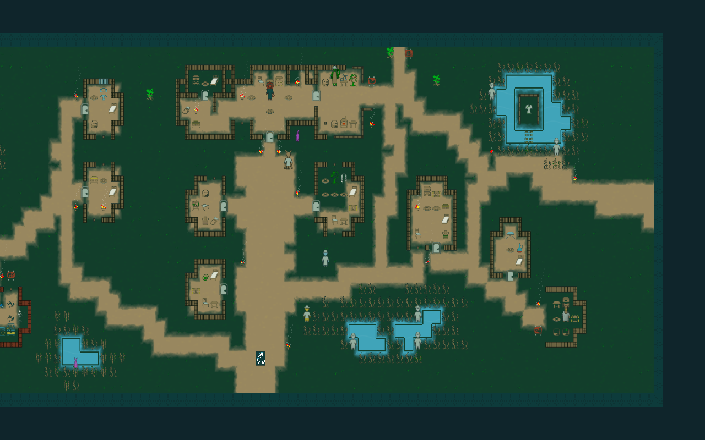
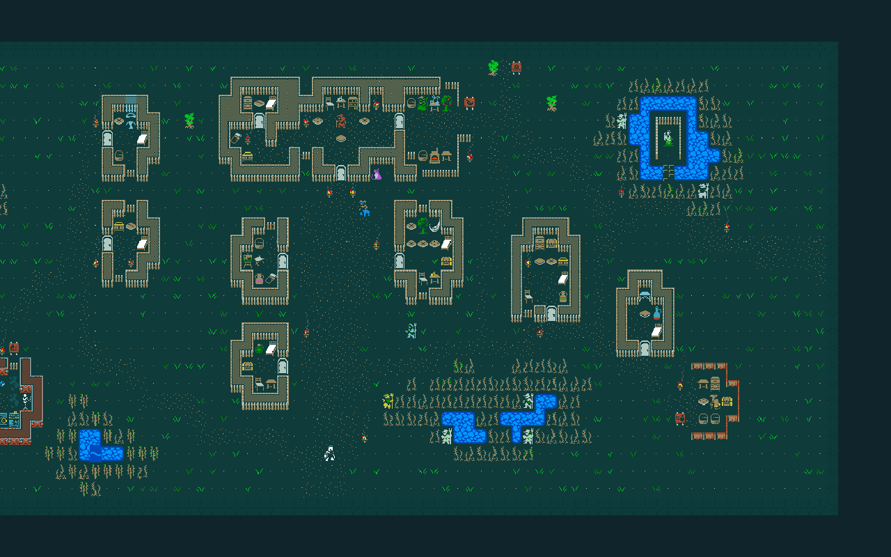

Shared race bodies, fixed variants for the village’s distinctive anatomy, and actual equipped items. Scenery starts from the original tile’s coverage and detail shapes, with editable contours and Qud palette roles. These are asset assemblies; native integration evidence is recorded separately.
Limbs are painted into body graphics, not separate animated models. Unrecognized anatomy, equipment or postures retain native graphics. Ordinary bodies are selected by race and gender; occupation does not set their pose. Personal cosmetic customization remains postponed.
The original shape and two color roles guide the contour conversion. Continuous ground/water textures and 16-mask wall surfaces are separate from these isolated silhouette previews. Linked geometry and native state are checked in the game.
Fully clothed child variants use shorter torsos and larger head proportions. They are not assigned to villagers: the captured Qud actors provide no established age selector. Adult dromads share one body across genders; no source establishes distinct morphology. Cat/fish age or sex differences are not invented.
Original positions, controlled full-map visibility. The captures are unchanged game-camera readbacks, separate from the enlarged asset assemblies.


Original on the left, conversion on the right. Diagnostic facing captures use isolated positions; they do not claim a new walking or limb animation system. Native verification and limits
Packaged body, equipment and scenery contract · Native source packets · Conversion procedure · Specification and reconciliation